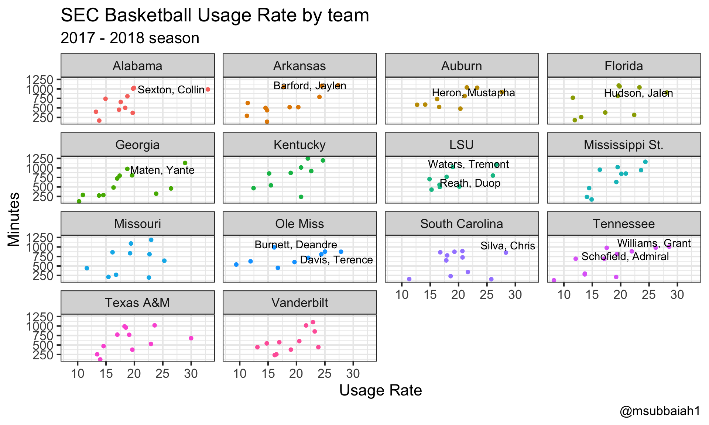

Basketball_Ex.RmdThis example will focus on looking at SEC basketball players for 2017-2018. Data is accquired using the player_stats function found in collegeballR
library(dplyr)
library(ggplot2)
library(ggrepel)
library(data.table)
library(collegeballR)
library(rvest)
sec_urls <- "http://stats.ncaa.org/team/inst_team_list?academic_year=2018&conf_id=911&division=1&sport_code=MBB"
team_names <- read_html(sec_urls) %>% html_nodes(".css-panes a") %>% html_text()
team_names <- trimws(team_names)
teams <- team_mapping(2018,"MBB")
sec <- teams %>% filter(team_name %in% team_names) %>% mutate(
team_id = as.numeric(team_id)
)
head(sec)## team_id team_name year
## 1 8 Alabama 2018
## 2 31 Arkansas 2018
## 3 37 Auburn 2018
## 4 235 Florida 2018
## 5 257 Georgia 2018
## 6 334 Kentucky 2018sec_player_stats <- sec %>% mutate(
team_id = as.numeric(team_id),
player_df = purrr::map(team_id,player_stats,year=2018,sport="MBB")
)I’ll look to incorporate a conference type function, just have to scale it out to all sports easily.
So there is an example above of using the player_stats function within purrr to get data for all SEC teams in basketball.
Let’s bring all the data into one dataframe for all teams.
sec_player_l <- sec_player_stats %>% select(player_df) %>% pull()
sec_player_df <- rbindlist(sec_player_l,fill=T)
colnames(sec_player_df)[c(20,21)] <- c("PPG","RPG")
sec_player_df <- sec_player_df %>% inner_join(.,sec) %>% select(-G,-team_id)Note to self, look at all sport player sites and see if Average is repeated more than once. It seems for basketball they are using Avg right after point and rebound data. It’s sort of odd, I’ll try and find a way to fix this.
sec_player_df <- sec_player_df %>% mutate(
MP = as.numeric(gsub("\\:.*","",MP))
)
sec_player_df[,c("FGM","FGA","DRebs","Tot Reb")] <- sapply(sec_player_df[,c("FGM","FGA","DRebs","Tot Reb")],as.numeric)
head(sec_player_df)## Jersey Player Yr Pos Ht GP GS MP FGM FGA FG% 3FG 3FGA
## 1 05 Johnson Jr., Avery Jr G 5-11 36 0 501 51 146 34.93 20 67
## 2 23 Petty, John Fr G 6-5 36 28 1026 123 313 39.30 90 242
## 3 12 Ingram, Dazon So G 6-5 35 32 1007 100 235 42.55 19 67
## 4 10 Jones, Herbert Fr G 6-7 35 13 741 58 142 40.85 7 26
## 5 00 Hall, Donta Jr F 6-9 34 30 806 151 208 72.60 NA NA
## 6 4 Giddens, Daniel So F 6-11 34 17 451 58 99 58.59 NA NA
## 3FG% FT FTA FT% PTS PPG RPG ORebs DRebs Tot Reb AST TO STL BLK
## 1 29.85 32 40 80.00 154 4.28 1.08 12 27 39 27 19 17 1
## 2 37.19 32 45 71.11 368 10.22 2.56 14 78 92 65 74 17 9
## 3 28.36 122 177 68.93 341 9.74 5.71 33 167 200 92 79 30 12
## 4 26.92 24 48 50.00 147 4.20 3.46 29 92 121 48 56 44 22
## 5 NA 60 108 55.56 362 10.65 6.59 76 148 224 20 43 24 68
## 6 NA 28 48 58.33 144 4.24 2.53 28 58 86 8 34 14 35
## Fouls Dbl Dbl Trpl Dbl DQ year team_name
## 1 54 NA NA 1 2018 Alabama
## 2 36 NA NA NA 2018 Alabama
## 3 93 2 NA 3 2018 Alabama
## 4 94 NA NA 4 2018 Alabama
## 5 59 5 NA NA 2018 Alabama
## 6 95 NA NA 2 2018 AlabamaBut for now the data is cleaned and team names are added back. Depending on the sport you select the data will look like this, with differing stats recorded. From this you can move on to creating advanced metrics, etc.
Let’s calculate usage rate. First we need to calculate some team based stats, before calculating USG rate.
sec_p_df <- sec_player_df %>% group_by(team_name) %>% mutate(
team_minutes = sum(MP,na.rm=T),
team_FGA = sum(FGA,na.rm=T),
team_FTA = sum(FTA,na.rm=T),
team_TO = sum(TO,na.rm=T)
) %>% ungroup() %>% as.data.frame()
sec_p_df[is.na(sec_p_df)] <- 0
sec_p_df <- sec_p_df %>% mutate(
usg_rate = 100 * ((FGA + 0.475 * FTA + TO) * (team_minutes/5)) / (MP * (team_FGA + 0.475 * team_FTA + team_TO))
)ind_df <- sec_p_df %>% filter(MP>100)
labels <- ind_df %>% filter(usg_rate>25 & MP > 750)
ggplot() +
geom_point(data = ind_df, aes(y = MP, x = usg_rate, color = team_name)) + theme_bw(base_size=16) +
geom_text_repel(data = labels, aes(x = usg_rate, y = MP, label = Player)) +
facet_wrap(~team_name) +
labs(x = "Usage Rate", y = "Minutes", caption = "@msubbaiah1",
title = "SEC Basketball Usage Rate by team",
subtitle = "2017 - 2018 season") +
theme(legend.position = "none")
There is the basics of getting player data from collegeballR!